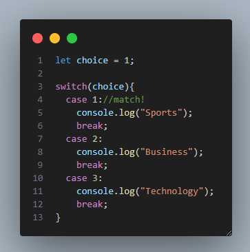
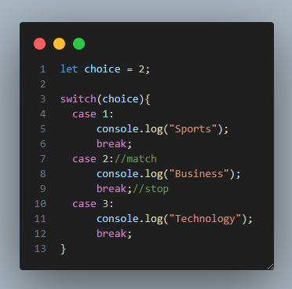
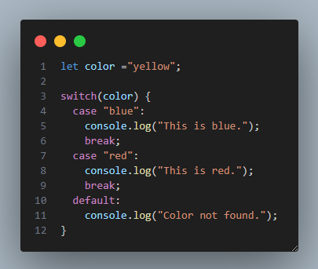

switch statement
Let's suppose you are creating a social media application, and you need to develop a menu where the user can choose the topic he is interested in marked by corresponding numbers. Let's see the switch statement in action here:
The switch expression is evaluated once. The value of the expression is compared with the values of each case, and if there’s a match, that block of code is executed.
break statement
Imagine you have 10 boxes and there is a ball in one of them. If you find it in the 5th box, you don't need to check the other 5 boxes, right? After getting the ball you will just stop searching because you've already gotten what you need. The break statement does the same thing in the switch statement. It stops the execution of other cases when there is a match and the program just goes out from the switch statement.
The default keyword
Often there will be no match, but we still need the program to do some action. For this, we use the default keyword, which specifies the code to run if there’s no case match. Like this:
The default block can be omitted if there is no need to handle the case when no match is found.
Lesson Takeaways
Awesome, you learned something new! Let's summarize what you've just learned:
The switch statement is used to perform different actions based on different conditions
in some cases, especially when you need to compare values of an expression, the switch statement makes the code more readable
use the break statement inside each case to stop the execution of other cases when there is a match
the default keyword is used to perform an action when there is no match